Operating Documentation
Direction 5193574-800, Rev# 22
LightSpeed 7.X Service Methods
Module Version 1.0, Version Date 4/22/10
Operating Documentation |
Use the following pictorial representation of required tools as a reference if you are unsure of a tool listed in Required Common Tools and Supplies.
| Tool Name | Picture | Example Part Number* |
| Adapter | 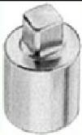 | Sears Industrial: 3/8” to 1/2” (9-4258) |
| Ball-Peen Hammer | Sears Industrial: 1lb/2lb (9-38465) | |
| Canned Air | Miller Stephenson: Aero Duster (MS-222N) | |
| Clamp on Amp Meter | 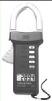 | Sears Industrial: 9-WTAD105 |
| Combination Wrench Set | 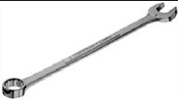 | Sears Industrial: U.S. Standard & Metric (9- 44048) |
| Cordless Screwdriver | 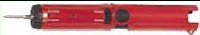 | Sears Industrial: 9-MU65401 |
| Deep Well Socket | 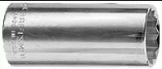 | Sears Industrial: 3/4” X 3/8” (included with 9-34496) |
| Dental Pick | 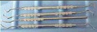 | |
| Diagonal Cutting Pliers | Sears Industrial: Small (9-45077) | |
| Drill | Sears Industrial: 3/8” or 1/2” (9-27859) | |
| Drill Adapter | 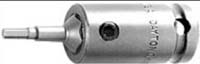 | Sears Industrial: 3" X 3/8” (9-APSZ24) |
| Drill Bit Set | 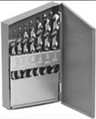 | Sears Industrial: U.S. Standard (9-66084) |
| DVM | 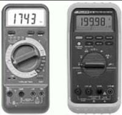 | Sears Industrial: 9-82028 Sears Industrial: 9-FL873 |
| Extension for Ratchet Wrench | 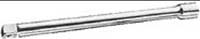 | Sears Industrial: 3" X ½” (9-44133) |
| Gloves | Sears Industrial: Large (9-40502) | |
| Hammer Drill | Sears Industrial: ½” (9-27205) | |
| Hex Bit Set | 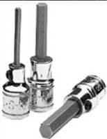 | Sears Industrial: ¼” (9-SK45508) |
| Hex Key (Allen Wrench) Set | 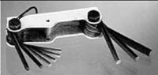 | Sears Industrial: U.S. Standard (9-46284) |
| Level | 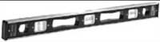 | Sears Industrial: 4’ (9-39856) |
| Masonry Bit | ||
| Open-End Wrench (Thin or Standard Tappet) | 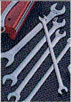 | Snap-on: 10mm (SRSM10) & 21mm (LTAM2124) |
| Pozi Screwdriver | 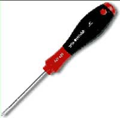 | |
| Ratchet Wrench | 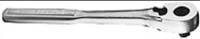 | Sears Industrial: 3/8" (9-43175) |
| Reciprocating Saw with Blades | 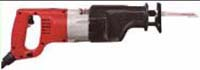 | Sears Industrial: 9-MU650921 |
| Safety Glasses | 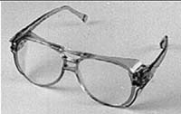 | Sears Industrial: 9-18650 |
| Safety Shoes | ||
| Screwdriver Set | Sears Industrial: Phillips & Straight (9-41505) | |
| Socket Set | Sears Industrial: Standard 3/8" (9-34496) | |
| Sockets | 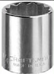 | Sears Industrial: 1 1/8" X 1/2" (9-47516) |
| Step Ladder | 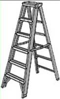 | Sears Industrial: 6’ (9-WN6006) |
| Tongue & Groove Pliers | Sears Industrial: Large (9-CL440) | |
| Torpedo Level | Sears Industrial: 9" (9-39829) | |
| Torque Wrench | 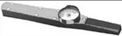 | Sears Industrial: 3/8" (9-WR3470) |
| Universal Joint | 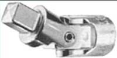 | Sears Industrial: 3/8" (9-4435) |
| Vacuum Cleaner | 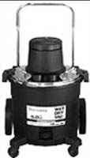 | Sears Industrial: 8 Gal (9-17780) |
| * Part Numbers given for reference only. GE Healthcare does not endorse any tool brand name. | ||